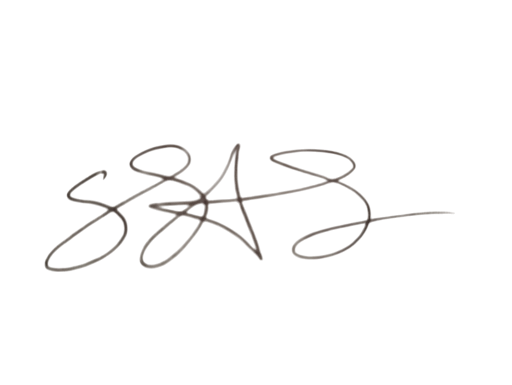

Profile
I am a passionate Computer Science student with strong interest in competitive programming and web development. Skilled in C++ for problem solving and algorithmic challenges, with participation in various online judges and contests. Alongside, I have built multiple HTML, CSS, and JavaScript projects, including responsive websites, interactive forms, and creative portfolio designs. I enjoy solving complex problems, developing user-friendly solutions, and continuously improving my technical and creative skills.
Education
| Degree | Institution/Board | Year | Result |
|---|---|---|---|
| SSC | Jessore Board | 2019 | GPA-5.00 |
| HSC | Jessore Board | 2021 | GPA-5.00 |
| B.Sc. in Computer Science | North Western University , Khulna | 2023 - Running | - |
Projects
GraphiCode-Creative IT Solutions Website
HTML,CSS,JS \ June – Nov 2025A growing IT initiative focused on web development, graphic design, and app solutions. Contributed to building responsive websites, managing projects, and collaborating with team members to deliver creative and client-focused solutions.
Campus Event Hub
Node.js, MongoDB, Bootstrap | Jan – Mar 2024Full-stack web app for students to discover and RSVP to campus events. Includes calendar sync and email reminders.
Team Lead – Managed 4 developers using Agile sprints.
Data Dashboard (Python)
Python, Pandas, Plotly | Oct 2023Analyzed public health datasets and created interactive visualizations to identify trends. Presented findings at a university symposium.
Leadership & Activities
GraphiCode – Leading web and app development projects with a focus on creative solutions.
Volunteer, Code for Good – Built websites for local non-profits.
References
Dr. Alice Johnson
Professor, University of Toronto
Email: alice.johnson@utoronto.ca
Mr. Robert Smith
Mentor, UofT Hackathon
Email: robert.smith@utoronto.ca
Ms. Laura Kim
Team Lead, Code for Good
Email: laura.kim@codeforgood.org
Signature:
